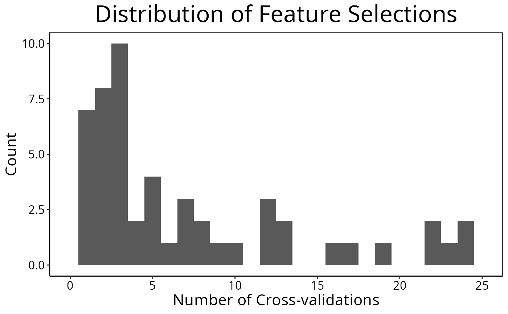

Get Frequencies of Feature Selection or Sample-wise Predictive Performance
distribution.RdThere are two modes. For aggregating feature selection results, the function counts the number of times each feature was selected in all cross-validations. For aggregating predictive results, the accuracy or C-index for each sample is visualised. This is useful in identifying samples that are difficult to predict well.
Arguments
- result
An object of class
ClassifyResult.- ...
Further parameters, such as
colourandfill, passed togeom_histogramorstat_density, depending on the value ofplotType.- dataType
Default:
"features". Whether to summarise sample-wise error rate ("samples") or the number of times or frequency a feature was selected.- plotType
Whether to draw a probability density curve or a histogram.
- summaryType
If feature selection, whether to summarise as a proportion or count.
- plot
Whether to draw a plot of the frequency of selection or error rate.
- xMax
Maximum data value to show in plot.
- fontSizes
A vector of length 3. The first number is the size of the title. The second number is the size of the axes titles. The third number is the size of the axes values.
- ordering
Default:
"descending". A character string, either"descending"or"ascending", which specifies the ordering direction for sorting the summary.
Value
If dataType is "features", a vector as long as the number of
features that were chosen at least once containing the number of times the
feature was chosen in cross validations or the proportion of times chosen.
If dataType is "samples", a vector as long as the number of samples,
containing the cross-validation error rate of the sample. If plot is
TRUE, then a plot is also made on the current graphics device.
Examples
#if(require(sparsediscrim))
#{
data(asthma)
result <- crossValidate(measurements, classes, nRepeats = 5)
featureDistribution <- distribution(result, "features", summaryType = "count",
plotType = "histogram", binwidth = 1)
#> Warning: Removed 2 rows containing missing values or values outside the scale range
#> (`geom_bar()`).

print(head(featureDistribution))
#> allFeaturesText
#> C10orf95 CROCC CTXN1 NAT14 SSBP4 ZDHHC1
#> 25 25 25 25 25 25
#}